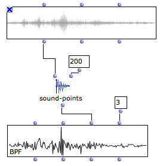

OpenMusic DocumentationHiérarchie de section : OM 6.6 User Manual > Audio > Sound Tools
OpenMusic DocumentationHiérarchie de section : OM 6.6 User Manual > Audio > Sound Tools
Navigation : page précédente | page suivante
Attention, votre navigateur ne supporte pas le javascript ou celui-ci à été désactivé. Certaines fonctionnalités de ce guide sont restreintes.
Sound Tools
A few utility functions related to sound objects are accessible in the Audio/Tools menu.
SOUND-DUR : returns the duration of a sound in seconds
SOUND-DUR-MS : duration in milliseconds
SEC->SAMPLES : converts a duration into a number of samples (depending on the sample rate)
etc.
SOUND-POINTS
The SOUND-POINTS function allows to downsample the sound waveofrm and extract a number of points out of it. |

SOUND-POINTS : downsampling a sound waveform. The sample values are displayed in a BPF (note that the number of decimals in the BPF has to be increased due to the range and precision of the sample values).
|
Références :
Plan :
Navigation : page précédente | page suivante
A propos...(c) Ircam - Centre Pompidou